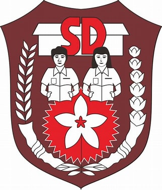
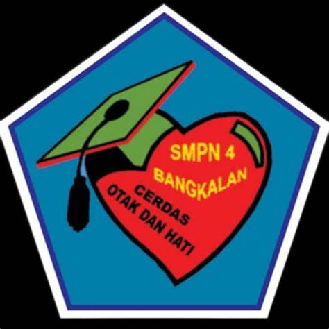
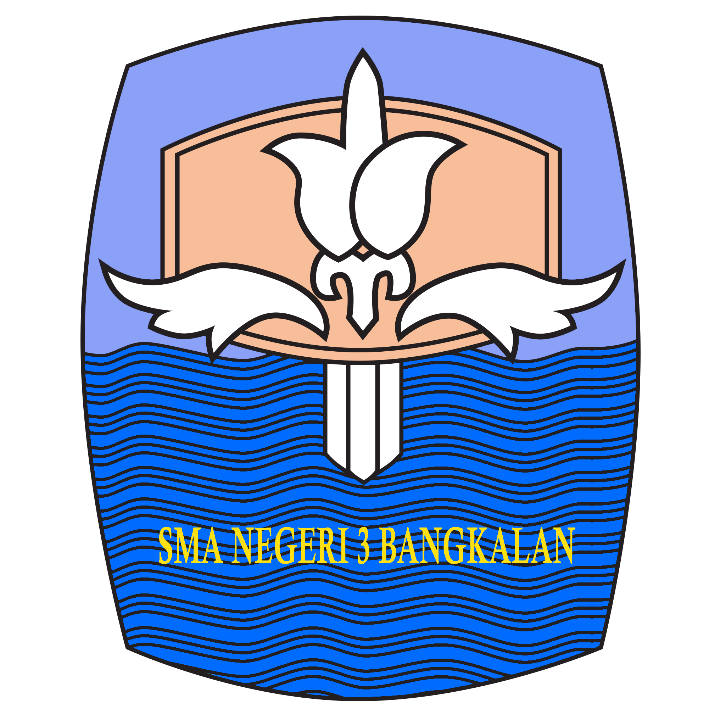

Riwayat Pendidikan
SD
SEKOLAH INDONESIA JEDDAH
2010-2014
SD
SDN BURNEH 2
2015-2016
SMP
SMPN 4 BANGKALAN
2017-2019
SMA
SMAN 3 BANGKALAN
2020-2023
KULIAH

UNIVERSITAS TRUNOJOYO MADURA
2024-SEKARANG
| Nama | Siska Isnaini |
| Alamat | Jl. Ketengan |
| Tempat, Tanggal Lahir | Jeddah, 6 Februari 2006 |
| Nomor HP | 085233566389 |
| siskaisnaini24@gmail.com |
SEKOLAH INDONESIA JEDDAH
2010-2014
SDN BURNEH 2
2015-2016
SMPN 4 BANGKALAN
2017-2019
SMAN 3 BANGKALAN
2020-2023
UNIVERSITAS TRUNOJOYO MADURA
2024-SEKARANG
Hobi: Membaca novel, mendengarkan musik, fangirling, menonton drama, mengedit, dan fotografi.
Minat: Seni & desain arsitektur
Tidak ada pengalaman akademik atau non-akademik
Kesan pertama: Masuk Universitas Trunojoyo Madura ini tidak bisa dideskripsikan, karena tidak menyangka bisa diterima melalui jalur SNBP pilihan pertama.
Cita-cita: Ingin menjadi wanita karier yang sukses, serta memiliki tabungan 2++ digit.
Harapan: Tetap berusaha dalam menghadapi segala kegagalan dan selalu bersyukur atas segala hal yang telah dilalui.